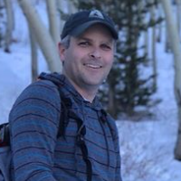

About Me

Utah has been my home throughout my life and I have always enjoyed exploring its many outdoor recreational opportunities. From the highest peaks of the Northern Utah mountains to the red rock canyons of Southern Utah I enjoy it all via hiking, backpacking, snowshoeing, and skiing.
My educational background includes Meteorology, Graphic Design, and now Web Development. I am excited at the prospect of of developing new skills and gaining new perspectives on life and work. My different educational backgrounds work together and build upon my unique skill-set, improving my overall potential to innovatively problem-solve and contribute to sociey.